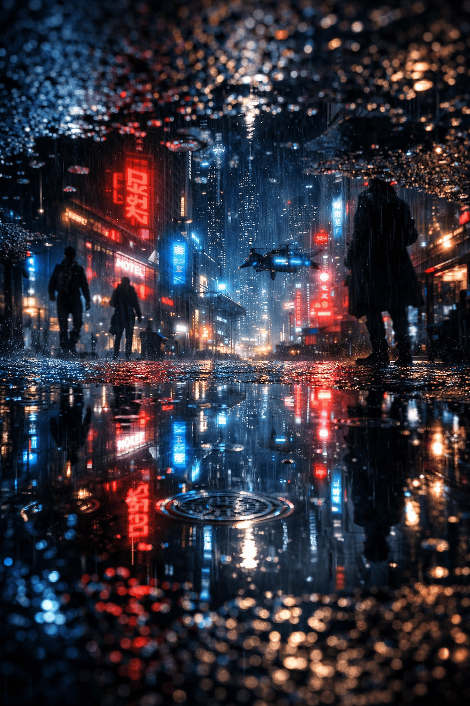
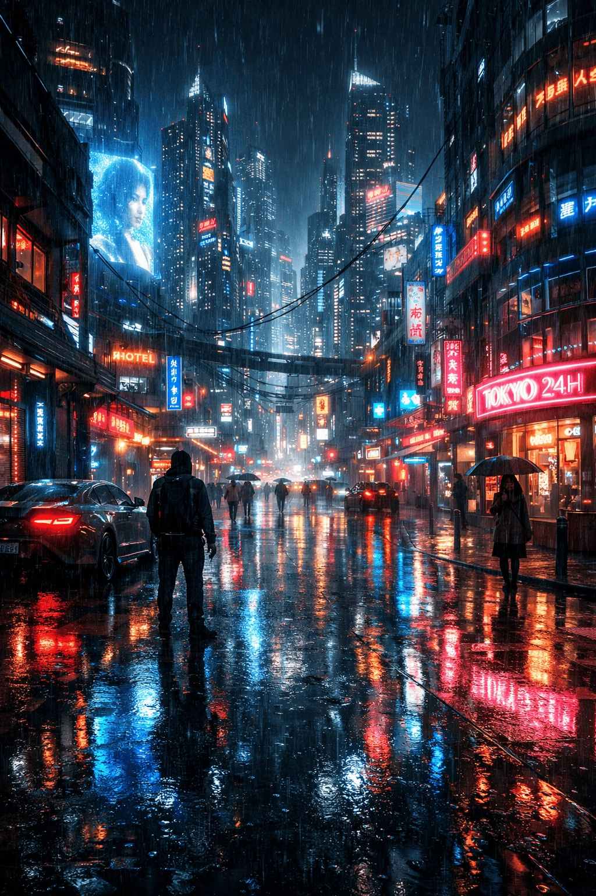

Большинство людей считают, что нейросети «рисуют случайно». На самом деле результат почти всегда напрямую зависит от промпта. Один и тот же инструмент может выдавать как посредственные, так и по-настоящему впечатляющие изображения.
В этом гайде на примере ChatGPT мы разберём, как именно формулировать запросы, чтобы нейросеть понимала вас максимально точно. Каждый шаг сопровождается визуальным сравнением — как делать не стоит и как делать правильно.
1. Чётко формулируйте основной объект
Самая частая ошибка новичков — слишком абстрактный запрос. Когда вы пишете «город» или «девушка», нейросеть не понимает, что именно для вас важно. В результате изображение получается случайным и слабым.
Правильный промпт всегда начинается с конкретного и понятного объекта.
👉 Разница здесь не в качестве модели, а в том, насколько ясно задан главный объект.
2. Всегда указывайте стиль и жанр
Нейросеть не знает, в каком стиле вы хотите изображение, если вы ей об этом не скажете. «Портрет человека» может выглядеть как фото, иллюстрация, 3D или картина маслом.
Добавление стиля сразу задаёт направление и резко повышает предсказуемость результата.
👉 Стиль — это не украшение, а инструмент управления результатом.
3. Контролируйте свет и атмосферу
Освещение — один из самых недооценённых параметров. Именно свет делает изображение «киношным» или, наоборот, плоским.
Без указания света нейросеть выбирает его случайно. С указанием — начинает работать как оператор.
4. Используйте структурированный промпт
Хаотичный набор слов работает хуже, чем логически выстроенный запрос. Структура помогает нейросети правильно расставлять приоритеты.


Итог
Хороший результат — это не удача. Это комбинация чёткого объекта, стиля, света и структуры.
Объект → Стиль → Атмосфера → Детали → Качество